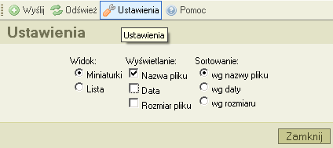
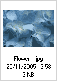

Przycisk "Ustawienia", w pasku narzędzi, otwiera "okienko z ustawieniami", gdzie można skonfigurować i dostosować ustawienia CKFindera, tak jak na poniższym zrzucie ekranu:

Wszystkie ustawienia sД… automatycznie zapisywane uЕјywajД…c "ciasteczek" (cookies). Ciasteczka to maЕ‚e pliki zawierajД…ce prywatne informacje dla poszczegГіlnych stron internetowych.
W celu zamkniД™cia okienka z ustawieniami, kliknij przycisk "Zamknij" albo kliknij ponownie w przycisk "Ustawienia" w pasku narzД™dzi.
Wszystkie opcje konfiguracyjne powiД…zane sД… z oknem plikГіw. SД… one uЕјywane do kontroli, w jaki sposГіb informacje zostanД… w nim wyЕ›wietlone.
Kontroluje sposГіb wyЕ›wietlania plikГіw w oknie plikГіw:
SЕ‚uЕјy do ustawienia iloЕ›ci informacji dostД™pnej w oknie plikГіw. Dla przykЕ‚adu, poniЕјej zamieszczono zrzut ekranu ustawieЕ„, gdzie Ејadna z opcji nie zostaЕ‚a wybrana aЕј do momentu, w ktГіrym wybrane zostaЕ‚y wszystkie opcje:
|
 |
SЕ‚uЕјy do kontroli wedЕ‚ug jakiego porzД…dku pliki zostanД… wyЕ›wietlone. DostД™pne opcje to: alfabetyczne sortowanie wedЕ‚ug nazwy, wedЕ‚ug daty utworzenia a takЕјe wedЕ‚ug rozmiaru pliku.